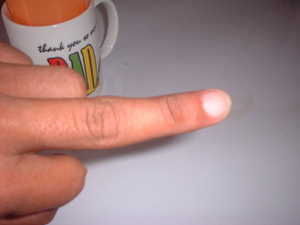

labew2 
/labɔw/
Data Qual: labaw
adj.
“greater”
adj.
greater
Eng. greater
Online dict status: -
Usage level: L
adj.
(peglabew, peg><ø-) greatness; high status
Deisek dè ka peglabew rin te katungdanan ku.
A little bit higher his right than me.
Eng. greatness; high status; status
Online dict status: -
Usage level: M
adj.
a leader; a prestigious person
Wrd.Gloss: prominent
Eng. prominent; leader; prestigious person
Online dict status: -
Usage level: L
1.
/labɔw/
adj.
(mapalabew-labew, mA1-pA-rdpRT-) arrogant
Kenè kew tumpang duè ne etew su mapalabew-labew sika.
Don't against that person because he is arrogant.
Eng. arrogant; boast (thingking that they are ahead of someone else)
Online dict status: -
Usage level: M
2.
n.
(tinlelabew, tiN-rdpCV-?) middle finger or toe
Masakit ka tinlelabew ku.
My middle finger is aching.
Morpho. la- becomes lo-
Eng. middle finger; centre finger; finger; middle toe; centre toe; toe
Tag. hinlaláto
Ceb. kinatas-ang tudlò
Ilo.: akíntengá nga rámay
OCM: Ethnoanatomy (826)
DDP: Finger, toe (2.1.3.3)
Online dict status: -
Usage level: M
Updated by: RJH,TME,QDL,NJK
Last updated: 10/Feb/2010
Updated by: RJH,QDL,QDL
Last updated: 28/Jul/2009
This page last updated: 19/May/2012
Copyright © 2009-2010, Matigsalug Language Christian Association, Inc